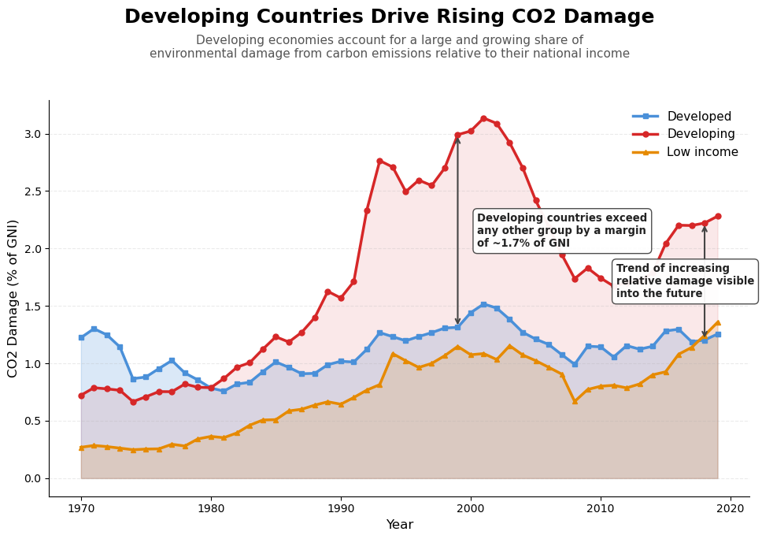
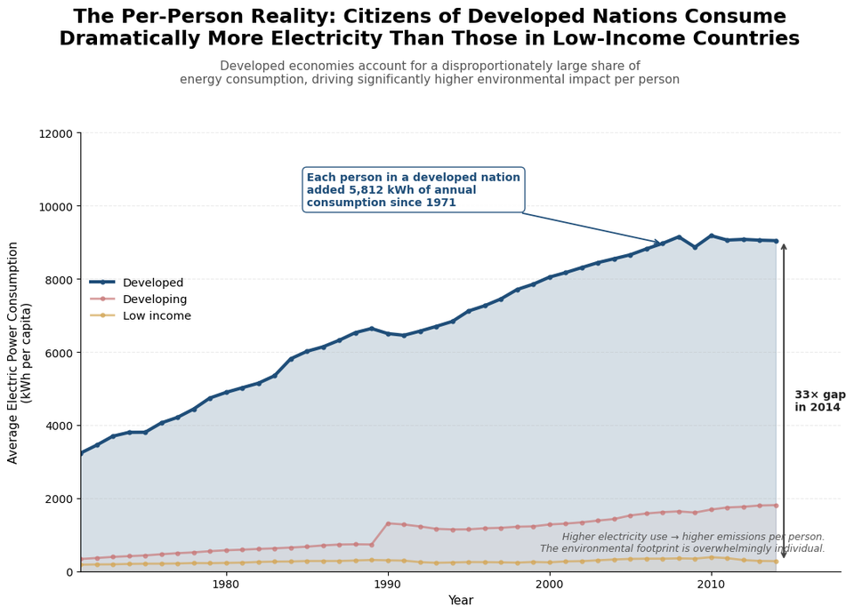

Proposition: Developing countries contribute more to environmental damage than developed countries
FOR the Proposition

Group definitions: Countries are classified using income tiers from the dataset's country metadata. Developed = High income countries. Developing = Upper-middle and lower-middle income countries combined. Low income = Low income countries.
Design Decisions and Rationale:
- Slanted Title | Score: -1: The title “Developing Countries Drive Rising CO2 Damage” informs the conclusion of the visualization before the reader is able to process the data, potentially suggesting them to interpret the chart in a particular direction. Alternatively, we could have chosen a more neutral title such as “CO2 Damage by Development Status Over Time,” but we ultimately sided with the slanted version to maximize persuasive impact without being immediately obvious.
- Country Groupings | Score: 0.5: The metadata in the dataset was used to combine the countries labeled ‘upper middle income’ and ‘lower middle income’ into the developing category while the ‘lower income’ and ‘higher income’ were classified as their respective categories. This grouping simplifies the comparison into broader development categories, making the overall trend easier to interpret at a glance. However, it also introduces some abstraction, as countries with potentially different economic structures and emission profiles are aggregated together into a mean value, which may smooth over meaningful within-group variation.
- Color Bias | Score: -1: Within the plot, Developing countries are depicted in bright red while Developed countries appear in cool blue, potentially misleading the reader towards the cultural association of red as an alarming trend or blue with a more neutral tone. This decision could guide viewers’ emotional response before engaging with the true data trends, leading us to consider implementing a colorblind-friendly neutral palette, but the red/blue contrast proved to be an effectively distinct contrast between the two opposing trends.
- Metric Choice (% of GNI) | Score: 1: By normalizing CO2 damage as a share of gross national income, we were able to effectively compare countries of vastly different economic sizes, since developing countries bear a consistently larger economic burden from CO2 per dollar of wealth. A country like the United States produces enormous absolute CO2 damage but its equally enormous economy absorbs that cost differently than a smaller developing economy would. This measure prevents wealthier nations from appearing more harmful simply because their economics are larger.
- Aggregation Choice (Averaged by income group) | Score: 1.5: Averaging weights of each country equally regardless of its economic size or emissions contribution is helpful when the goal is to compare country-level experiences. By treating each country as a single observation, the metric avoids allowing a few large economies to dominate the trend, which would otherwise obscure patterns present across the majority of countries. This makes the visualization more representative of how CO₂ damage is distributed across nations as individual units, rather than reflecting the behavior of only the largest contributors. As a result, averaging % of Gross National Income provides a clearer picture of the general damage of countries within each development group, making it well-suited for cross-country comparisons of relative impact.
AGAINST the Proposition

Design Decisions and Rationale:
- Slanted Title | Score: -1: The title of "The Per-Person Reality: Citizens of Developed Nations Consume Dramatically More Electricity Than Those in Low-Income Countries" is one that may be long, but guides viewers to the most extreme comparison illustrated by the visualization before they are able to truly examine the trends in the chart. The phrasing of "Per-Person Reality" suggests this metric as the objectively correct method to measure environmental involvement in average electricity consumption, dismissing aggregate framings despite both lenses having legitimate analytical significance.
- Editorialized Subtitle | Score: -1: Beneath the title, the subtitle reads "Developed economies account for a disproportionately large share of energy consumption, driving significantly higher environmental impact per person." This sentence is the most explicitly editorial text on the chart, as it directly tells the viewer how to interpret the data ("disproportionately large," "significantly higher impact") before they engage with the lines themselves. A neutral version would simply describe the metric and time range. We considered removing the subtitle entirely, but kept it because subtitles are a conventional design element, and a casual reader is likely to absorb its framing without recognizing it as commentary rather than description.
- Per-Capita Metric | Score: 0.5: Focusing on electricity consumption per person allows a fair comparison between groups of vastly different population sizes, since developing countries have roughly five times the population of developed ones, and aggregate consumption figures would obscure individual-level impact. Per-capita is a defensible normalization, but choosing it specifically because it favors our argument, while the proposition uses aggregate framing, means the choice carries some rhetorical weight rather than being purely earnest.
- 33x Gap Annotation | Score: -0.5: The annotation on the right side highlights a 33× multiplicative gap between Developed and Low-income groups rather than the Developed-vs-Developing gap of roughly 5×. By highlighting the most extreme pairing available, we maximize persuasive impact while leading viewers to assume the comparison is against the developing group, since developed-vs-developing is the framing of the proposition. This is a subtle misdirection that exaggerates the scale of the difference relative to what the proposition is actually arguing about.
- 5,812 kWh Growth Annotation | Score: 0.5: Noting that each person in a developed country added approximately 5,812 kWh of annual consumption since 1971 reflects a real and verifiable trend in the data. The number itself is accurate and computed directly. Mild slant comes from choosing to highlight this number rather than, say, the percentage growth of developing countries' consumption (which is a higher growth rate but a smaller absolute number). The choice of which growth statistic to feature is itself rhetorical.
Final Reflection
Building the proposition visual was relatively straightforward. The "% of GNI" metric was consistently reported across the dataset's range and required minimal transformation, and binning the four World Bank income tiers into three development categories simply shifted granularity to make the comparison easier to read. Constructing a convincing counter-argument was much harder, because the per-capita argument required deliberate framing to land. The most surprising finding during this process was how strongly the choice of metric determines which side of the proposition wins. Aggregate damage in current US dollars favors one conclusion, % of GNI favors another, and per-capita consumption favors a third. The same dataset can support nearly opposite arguments depending on what you divide by. We saw this concretely when we drafted but rejected a cumulative-damage visualization with a 2010 cutoff. The cumulative line clearly favored the counter-argument through 2010, but extending the range another decade reversed the story entirely, and we would have had to clip the data to keep the message intact. We decided that the level of manipulation crossed the line we wanted to hold, and chose the per-capita visualization instead because it holds across the full available data window without needing to be trimmed.
That experience shaped how we now define ethical analysis and visualization. Our working line is that enhancing existing data trends through design choices is acceptable persuasion, while masking visible patterns to support a chosen narrative is closer to manipulation. Title slant, color choice, line weight, and shaded fills all fall on the persuasion side: they prime viewers through visual cues, but the underlying numbers remain visible and verifiable on the chart. Filtering data to hide a contradicting trend, choosing a denominator specifically because it changes the conclusion, or annotating a comparison that misleads viewers about what is actually being compared all fall closer to manipulation, because they alter what the viewer can see or how they interpret what is shown. The scored decisions in our counter-argument visualization sit along this spectrum: the editorial subtitle and slanted title are persuasive but transparent, while the 33× annotation is the most ethically borderline choice we kept, because it presents a real number that nonetheless misdirects viewers about the proposition's actual framing.
This line is not absolute though, and the stakes of the topic matter. With climate data, deliberate framing influences which countries policy makers and the public hold responsible for environmental damage, which has direct implications for climate financing, technology transfer, and the policy constraints placed on developed, developing, and low-income economies. A persuasive visualization that crosses into manipulation does not just mislead. It can shift real-world responsibility in ways that affect billions of people. We saw this especially clearly with the 33× annotation: the comparison is technically accurate, but if a reader walked away believing the proposition's developed-vs-developing argument was off by 33×, they would be misinformed about the actual policy debate. Just as data analysts are expected to maintain methodological integrity, visualization designers carry responsibility for the takeaways their charts produce, particularly when the topic affects policy on a global scale. So while we drew our line at the enhance-versus-mask distinction, we came away believing that caution should scale with stakes, and that the same design choice can be reasonable in one context and harmful in another.